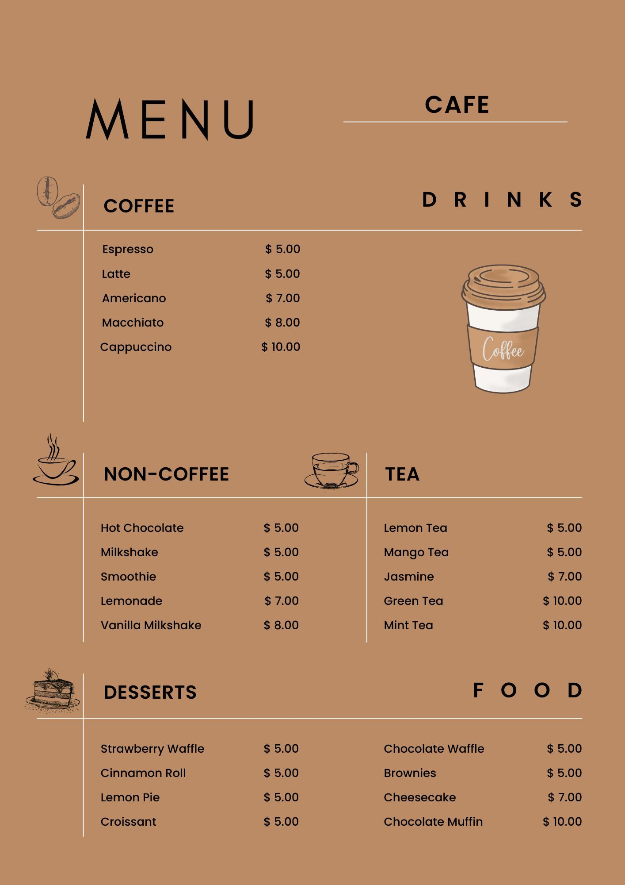
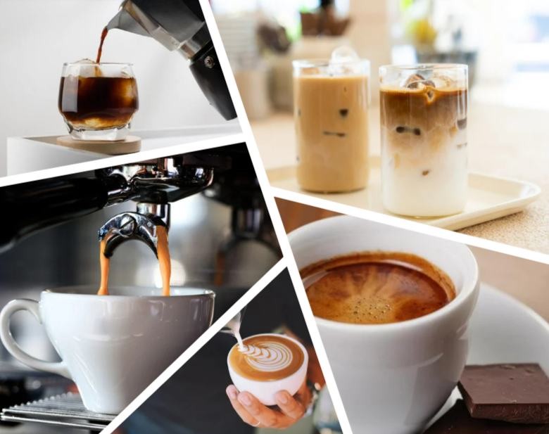
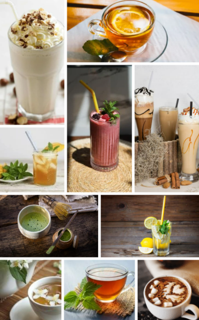

Welcome to Daily Grind by Cthsgh, where every cup tells a story!
Nestled in the heart of 185025 Coffee St, Latte City, Matcha, our cozy cafe is the perfect spot
to start your day, catch up with friends, or find a quiet moment for yourself.
We take pride in crafting rich, aromatic coffee using the finest beans, expertly brewed to perfection.
Whether you're craving a smooth latte, a bold espresso, or a refreshing cold brew, we've got something
to satisfy
every coffee lover. Pair your drink with our selection of fresh pastries, homemade treats, and
light bites made with love.
With warm lighting, comfy seating, and a welcoming atmosphere, Daily Grind by Cthsgh
is more than just a coffee shop-it's a place to relax, connect, and be inspired.
Come in, grab a cup, and make yourself at home. We can't wait to serve you!
Daily Grind's Menu
Indulge in a delightful selection of beverages and desserts with our elegantly crafted café menu.
Whether you're a coffee enthusiast, a tea lover, or have a sweet tooth, we have something to satisfy your cravings.

☕ Coffee Selection– Enjoy the rich flavors of expertly brewed Espresso, Latte, Americano, Macchiato, and Cappuccino,
each crafted to perfection.

🍵 Tea & Non-Coffee Drinks – Savor the soothing notes of Lemon Tea, Mango Tea, Jasmine, Green Tea, and Mint Tea.
If you're looking for non-caffeinated options, treat yourself to Hot Chocolate, Smoothies, Milkshakes, Lemonade, or a Vanilla Milkshake.

🍰 Desserts & Pastries – Complement your drink with our delicious range of sweet treats, including Strawberry Waffles, Cinnamon Rolls,
Lemon Pie, Croissants, Chocolate Waffles, Brownies, Cheesecake, and Chocolate Muffins.
With a warm ambiance and an inviting selection, our café offers the perfect place to unwind and enjoy quality food and drinks.
Come and experience flavors that delight the senses!
Daily Grind by Cthsgh - Review Board
Location: 185025 Coffee St, Latte City, Matcha
Rating: ★★★★☆ (4/5)
Atmosphere
Rating: ★★★★☆ (4/5)
Coffee Haven offers a cozy, relaxed environment that’s perfect for both casual meetings and solo visits.
The décor is modern with warm, earthy tones, making it a great place to unwind.
There’s plenty of seating, including plush armchairs and some high-top tables for a more social vibe.
The background music is chill but not overpowering, adding to the ambiance without distracting from conversations.
It can get a little crowded during peak hours, but the vibe remains welcoming.
Customer Service
Rating: ★★★★★ (5/5)
The staff is friendly, efficient, and knowledgeable about their menu.
I asked for a recommendation, and they were more than happy to suggest a few drinks based on my preferences.
The baristas are quick to prepare drinks and are always willing to chat if you're a regular.
Overall, they create a warm and welcoming environment.
Menu
Rating: ★★★★☆ (4/5)
Coffee Haven has a solid selection of drinks, including various espresso-based options, cold brews, and seasonal specialties.
They also offer pastries and a few savory snacks like sandwiches and salads. I tried the signature caramel latte,
and it was smooth with just the right balance of sweetness and coffee flavor. The pastries, especially the blueberry muffins,were fresh and delicious.
The only downside is that their menu is slightly more limited compared to other local coffee shops, but what they do, they do well.
Quality of Coffee
Rating: ★★★★★ (5/5)
This is where Coffee Haven really shines. The coffee is brewed to perfection, with rich flavors and a smooth finish.
They use high-quality beans and it’s clear they take their coffee seriously. Whether you’re into strong espressos or creamy lattes,
their beverages are consistently top-notch. The cold brew is another standout—rich, smooth, and not overly bitter.
Pricing
Rating: ★★★☆☆ (3/5)
Prices are a little on the higher end, but it's expected for the quality of coffee and the experience.
A regular latte is around $5, which is typical for a specialty coffee shop. However,
some people may find it a bit much for a daily routine, especially if you're a regular consumer of coffee.
Wi-Fi and Power Outlets
Rating: ★★★☆☆ (3/5)
While there is Wi-Fi available, it’s not the fastest connection. For people looking to do a bit of work or study,
it’s decent but not the best for long hours of heavy internet use. There are power outlets scattered around the café,
but they are not as plentiful as other coffee shops, so if you need one, it’s worth arriving early.
Overall Experience
Rating: ★★★★☆ (4/5)
Coffee Haven is a great choice for anyone who loves a good cup of coffee in a relaxed setting. The quality of coffee is exceptional,
and the friendly service makes it a pleasant place to spend time. While the prices and limited menu might not appeal to everyone,
it’s a perfect spot for coffee lovers who appreciate a high-quality brew.
Frequently Asked Questions (FAQs)
1. What are your opening and closing hours?
We are open from 8:00 to 22:00 daily.
2. Do you offer dairy-free or vegan options?
Yes! We have dairy-free milk alternatives such as almond, soy, oat, and coconut milk. We also offer some vegan-friendly desserts.
3. Do you have sugar-free or low-calorie drinks?
Absolutely! We offer sugar-free syrups and alternative sweeteners upon request.
4. Can I bring my own cup?
Yes! We encourage sustainability. Bring your own cup and enjoy a discount on your drink.
5. Do you offer free Wi-Fi?
Yes, we provide free Wi-Fi for our customers. Just ask our staff for the voucher.
6. Do you have outdoor seating?
Yes, we offer both indoor and outdoor seating options for a comfortable experience.
7. Can I place an order for pickup or delivery?
Yes, you can order ahead for pickup. We also partner with food delivery services like GrabFood and FoodPanda.
8. Do you offer loyalty rewards or discounts?
Yes! Join our loyalty program to earn points on every purchase and enjoy special discounts and free drinks.
9. Are pets allowed in the café?
We welcome well-behaved pets in our outdoor seating area. Service animals are allowed inside.
10. Do you have gift cards?
Yes, we offer gift cards that make perfect presents for coffee lovers!
11. Do you host private events or offer catering services?
Yes, we provide catering and can host private events. Contact us for more details.
12. What is your most popular drink?
Our bestsellers include Macchiato and Chocolate Muffin, but feel free to ask our baristas for recommendations!